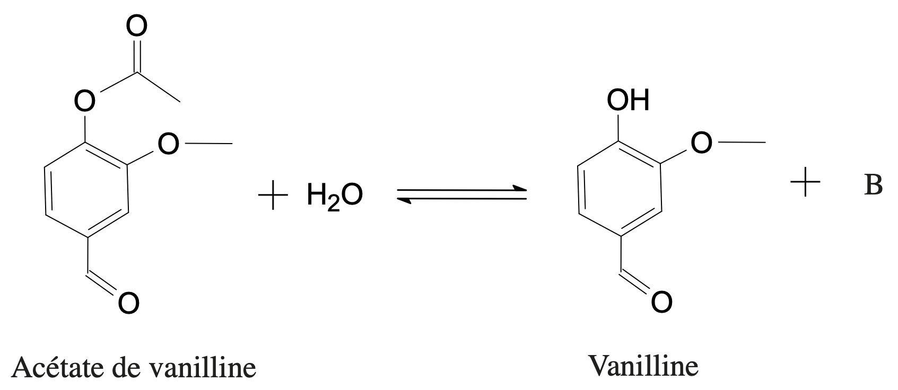

Quelques molécules
On propose les molécules ayant les formules topologiques suivantes :
- Parmi les molécules proposées, quelles sont celles qui sont polyfonctionnelles ? Justifier la réponse.
Solution
Une molécule polyfonctionnelle possède plusieurs groupes caractéristiques. Les molécules $B$ et $E$ correspondent à cette caractéristique ; elles sont polyfonctionnelles.
- Recopier les molécules $A$ à $E$ sur votre copie. Entourer et nommer les différents groupes présents. Nommer ensuite les fonctions chimiques correspondantes (changer de couleur pour bien distinguer le nom du groupe de celui de la fonction).
Solution
- A : groupe carboxyle, fonction acide carboxylique ;
- B : groupe hydroxyle, fonction alcool ; groupe carbonyle, fonction cétone ; groupe carboxyle, fonction acide carboxylique ;
- C : groupe amide, fonction amide ;
- D : groupe ester, fonction ester ;
- E : groupe amine, fonction amine ; groupe carboxyle, fonction acide carboxylique.
- Nommer les molécules $A$, $C$, $D$ et $E$.
Le nom de la molécules $E$ est en bonus.
Solution
- A : acide éthanoïque
- C : propanamide
- D : pentanoate de méthyle
- E : acide 2-aminopropanoïque (alanine)
- Donner la formule semi-développée de la molécule $B$.
Solution
$\ce{CH3-CH(OH)-CH2-CO-CO2H}$
Catégories de réactions
Compléter les équations des réactions données ci-dessous en identifiant les entités $A$, $B$, etc. et préciser, dans chaque cas, s’il s’agit d’une réaction de substitution, d’addition ou d’élimination.
- $\ce{CH3-CH2-CH2-OH -> CH3-CH=CH2 + A}$
Solution
Élimination – eau $\ce{H2O}$.
- $\ce{CH3-CH2-OH + B -> CH3-CH2-I + H2O}$
Solution
Substitution – iodure d’hydrogène $\ce{HI}$.
- $\text{propan-2-ol } \ce{->} \text{ propanone} + C$
Solution
Élimination – dihydrogène $\ce{H2}$.
- $\ce{CH3-CH2-CH=CH2 + D -> CH3-CH2-CHI-CH3}$
Solution
Addition – iodure d’hydrogène $\ce{HI}$.
- $\ce{CH3O^- + CH3-CH2-CH2-Cl -> E + Cl^-}$
Solution
Substitution – méthoxypropane $\ce{CH3-CH2-CH2-O-CH3}$
La vanillline
La vanille contient de nombreux composés aromatiques. La note dominante de son parfum est due à la molécule de vanilline (4-hydroxy-3-méthoxybenzaldéhyde) représentée ci-dessous. Depuis plus d’un siècle, la vanilline est essentiellement produite artificiellement. Elle est très utilisée en parfumerie.
La synthèse de la vanilline se fait en trois étapes :
-
Première étape : synthèse de l’acétate d’isoeugénol à partir de l’isoeugénol
La réaction est représentée par l’équation suivante : -
Deuxième étape : transformation de l’acétate d’isoeugénol en acétate de vanilline
-
Troisième étape : obtention de la vanilline par action de l’eau sur l’acétate de vanilline
La réaction est représentée par l’équation suivante : 
On se propose d’étudier la première et la dernière étape de ce procédé chimique conduisant à la synthèse de la vanilline.
Données
- Entités chimiques :
| Entité chimique | Masse molaire ($\pu{g.mol-1}$) |
Quelques propriétés |
|---|---|---|
| Isoeugénol | 164 | $d=1,08$ Nocif en cas d’ingestion et irritant pour les yeux, les voies respiratoires et la peau. |
| Acétate d’isoeugénol | 205 | $T_{\text{fusion}} = \pu{80 °C}$ Soluble dans la plupart des solvants organiques et insoluble dans l’eau glacée. |
| Anhydride éthanoïque | 102 | $d = \pu{1,08}$ Corrosif, inflammable, provoque des brûlures. Réagit violemment avec l’eau. |
- Masse volumique de l’eau : $\rho_{\text{eau}} = \pu{1,00 g.mL-1}$.
Partie A : Première étape : Synthèse de l’acétate d’isoeugénol
Mode opératoire
- Dans un ballon de $\pu{250 mL}$, introduire $\pu{10,0 g}$ d’isoeugénol, $\pu{20,0 mL}$ d’anhydride acétique (anhydride éthanoïque) et quelques gouttes d’acide orthophosphorique.
- Chauffer en utilisant un montage à reflux et maintenir une ébullition douce pendant 30 minutes.
- Refroidir jusqu’à température ambiante.
- Verser le contenu du ballon dans un bécher contenant $\pu{30 mL}$ d’eau glacée, tout en agitant.
- Filtrer sur büchner et laver les cristaux formés avec de l’eau glacée.
- Pourquoi réalise-t-on un montage à reflux et chauffe-t-on ?
Solution
- On élève la température de façon à accélérer la réaction car la température est un facteur cinétique.
- Lorsqu’on élève la température, les liquides passent à l’état gazeux et quittent le milieu réactionnel. Le montage à reflux permet de condenser ces vapeurs, les liquides retournent alors dans le ballon.
- Quelles précautions faut-il prendre pour manipuler l’anhydride éthanoïque ?
Solution
- L’anhydride acétique doit être manipulé avec des gants et des lunettes puisqu’il est corrosif et provoque des brûlures.
- L’anhydride acétique doit être manipulé loin d’une flamme puisqu’il est inflammable.
- On ne doit pas respirer au-dessus d’une bouteille d’anhydride acétique dont le bouchon serait ouvert puisqu’il réagit facilement avec l’eau, il se forme alors des vapeurs d’acide acétique.
- L’acide orthophosphorique est un catalyseur de la synthèse. Quel est son rôle ?
Solution
Un catalyseur est une entité qui accélère une réaction chimique mais qui n’apparaît pas dans l’équation de la réaction chimique. L’acide orthophosphorique ne modifie pas l’état final de la transformation.
- Cette réaction est-elle une substitution, une addition ou une élimination ? Justifier la réponse.
Solution
Cette réaction est une substitution.
- Il est possible de réaliser cette réaction en utilisant de l’acide éthanoïque comme second réactif selon l’équation :
Cette réaction est très lente et la transformation chimique qu’elle modélise n’est pas totale.
Expliquer pourquoi la transformation n’est pas totale et justifier l’utilisation de l’anhydride éthanoïque dans le protocole à la place de l’acide éthanoïque.
Solution
- La réaction présentée dans cette question conduit à des équilibres chimiques car en fait, il existe deux réaction inverses l’une de l’autre : l’estérification mais aussi l’hydrolyse de l’ester formé car cet ester peut réagir avec l’eau (formée elle aussi).
- La réaction proposée dans le protocole conduit à des transformations totales car l’ester formé ne peut pas réagir avec l’acide acétique (formé lui aussi).
- Pourquoi verse-t-on le contenu du ballon dans l’eau glacée ?
Solution
D’après les données, l’acétate d’isoeugénol est insoluble dans l’eau glacée. Il cristallise donc alors, ce qui permettra de le récupérer par filtrage.
- Calculer la quantité de matière initiale de chacun des réactifs.
Solution
- Isoeugénol : $n_1 = \dfrac{m_1}{M_1}$. A.N. $n_1 = \dfrac{\pu{10,0 g}}{\pu{164 g.mol-1}}=\pu{6,10e-2 mol}$
- Anhydride éthanoïque : $n_2 = \dfrac{m_2}{M_2} = \dfrac{\rho_2 \, V_2}{M_2}$ avec $\rho_2 = d_2 \, \rho_{\text{eau}}$. Donc $n_2 = \dfrac{d_2 \, \rho_{\text{eau}} \, V_2}{M_2}$.
$n_2 = \dfrac{\pu{1,08} \times \pu{1,00 g.mL-1} \times \pu{20,0 mL}}{\pu{102 g.mol-1}} = \pu{0,212 mol}$
- L’expérimentateur a obtenu $\pu{11,3 g}$ de cristaux d’acétate d’isoeugénol. Calculer le rendement de la synthèse.
Solution
Le rendement $\eta$ a pour expression $$ \eta = \dfrac{m_f (\text{acétate d’isoeugénol})}{m_{\text{max}} (\text{acétate d’isoeugénol})} = \dfrac{n_f (\text{acétate d’isoeugénol})}{n_{\text{max}} (\text{acétate d’isoeugénol})} $$
| État | Avanc. | isoeugénol | anhydride éthanoïque | acétate d’isoeugénol | acide éthanoïque | |
|---|---|---|---|---|---|---|
| Initial | 0 | $n_1$ | $n_2$ | 0 | 0 | |
| Final | $x_f$ | $n_1 - x_f$ | $n_2 - x_f$ | $x_f$ | $x_f$ | |
| Final hypo. | $x_{\text{max}}$ | $n_1 - x_{\text{max}}$ | $n_2 - x_{\text{max}}$ | $x_{\text{max}}$ | $x_{\text{max}}$ |
-
$n_f (\text{acétate d’isoeugénol}) = \dfrac{m_f (\text{acétate d’isoeugénol})}{M(\text{acétate d’isoeugénol})}$.
A.N. $n_f (\text{acétate d’isoeugénol}) = \dfrac{\pu{11,3 g}}{\pu{205 g.mol-1}} = \pu{5,51e-2 mol}$. -
Recherche du réactif limitant : l’avancement maximal et la plus petite valeur telle que $n_1 - x_{\text{max}}=0$ ou $n_2 - x_{\text{max}} = 0$.
A.N. $x_{\text{max}} = \pu{6,10e-2 mol}$. -
D’après le tableau d’avancement, $n_{\text{max}} (\text{acétate d’isoeugénol}) = x_{\text{max}} = \pu{6,10e-2 mol}$.
Finalement, $$ \eta = \dfrac{\pu{5,51e-2 mol}}{\pu{6,10e-2 mol}} = \pu{0,904} $$ Le rendement est de 90,4 %.
Partie B : troisième étape : synthèse de la vanilline
- Donner le nom et la formule semi-développée de la molécule $B$.
Solution
$B$ est l’acide éthanoïque.
- L’eau est-elle un réactif chimiosélectif pour la réaction ? Justifier la réponse.
Solution
L’acétate de vanilline est une molécule polyfonctionnelle (3 groupes caractéristiques). L’eau n’attaque que le groupe ester, c’est donc un réactif chimiosélectif pour cette réaction.
- La transformation chimique modélisée par la réaction n’est pas totale. Comment pourrait-on améliorer son rendement ?
Solution
Améliorer le rendement d’une transformation chimique, c’est déplacer l’équilibre dans le sens direct de la réaction. On sait qu’on peut réaliser cette opération en augmentant la quantité de matière de l’un des réactifs (le moins cher généralement, comme l’eau ici) qui devient donc le réactif en excès, ou en retirant un des produits au fur et à mesure de sa formation.